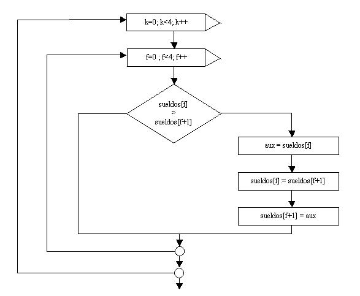

El ordenamiento de un vector se logra intercambiando las componentes de manera que:
vec[0] <= vec[1] <= vec[2] etc.
El contenido de la componente vec[0] sea menor o igual al contenido de la componente vec[1] y así sucesivamente.
Si se cumple lo dicho anteriormente decimos que el vector está ordenado de menor a mayor. Igualmente podemos ordenar un vector de mayor a menor.
Se puede ordenar tanto vectores con componentes de tipo int, float como String. En este último caso el ordenamiento es alfabético.
Problema 1:
Se debe crear un vector donde almacenar 5 sueldos. Ordenar el vector sueldos de menor a mayor.

Esta primera aproximación tiene por objetivo analizar los intercambios de elementos dentro del vector.
El algoritmo consiste en comparar si la primera componente es mayor a la segunda, en caso que la condición sea verdadera, intercambiamos los contenidos de las componentes.
Vamos a suponer que se ingresan los siguientes valores por teclado:
1200 750 820 550 490
En este ejemplo: ¿es 1200 mayor a 750? La respuesta es verdadera, por lo tanto intercambiamos el contenido de la componente 0 con el de la componente 1.
Luego comparamos el contenido de la componente 1 con el de la componente 2: ¿Es 1200 mayor a 820?
La respuesta es verdadera entonces intercambiamos.
Si hay 5 componentes hay que hacer 4 comparaciones, por eso el for se repite 4 veces.
Generalizando: si el vector tiene N componentes hay que hacer N-1 comparaciones.
Cuando f = 0 f = 1 f = 2 f = 3 750 750 750 750 1200 820 820 820 820 1200 550 550 550 550 1200 490 490 490 490 1200
Podemos ver cómo el valor más grande del vector desciende a la última componente. Empleamos una variable auxiliar (aux) para el proceso de intercambio:
aux=sueldos[f]; sueldos[f]=sueldos[f+1]; sueldos[f+1]=aux;
Al salir del for en este ejemplo el contenido del vector es el siguiente:
750 820 550 490 1200
Analizando el algoritmo podemos comprobar que el elemento mayor del vector se ubica ahora en el último lugar.
Podemos definir otros vectores con distintos valores y comprobar que siempre el elemento mayor queda al final.
Pero todavía con este algoritmo no se ordena un vector. Solamente está ordenado el último elemento del vector.
Ahora bien, con los 4 elementos que nos quedan podemos hacer el mismo proceso visto anteriormente, con lo cual quedará ordenado otro elemento del vector. Este proceso lo repetiremos hasta que quede ordenado por completo el vector.
Como debemos repetir el mismo algoritmo podemos englobar todo el bloque en otra estructura repetitiva.
Realicemos una prueba del siguiente algoritmo:
Cuando k = 0 f = 0 f = 1 f = 2 f = 3 750 750 750 750 1200 820 820 820 820 1200 550 550 550 550 1200 490 490 490 490 1200 Cuando k = 1 f = 0 f = 1 f = 2 f = 3 750 750 750 750 820 550 550 550 550 820 490 490 490 490 820 820 1200 1200 1200 1200 Cuando k = 2 f = 0 f = 1 f = 2 f = 3 550 550 550 550 750 490 490 490 490 750 750 750 820 820 820 820 1200 1200 1200 1200 Cuando k = 3 f = 0 f = 1 f = 2 f = 3 490 490 490 490 550 550 550 550 750 750 750 750 820 820 820 820 1200 1200 1200 1200
¿Porque repetimos 4 veces el for externo?
Como sabemos cada vez que se repite en forma completa el for interno queda ordenada una componente del vector. A primera vista diríamos que deberíamos repetir el for externo la cantidad de componentes del vector, en este ejemplo el vector sueldos tiene 5 componentes.
Si observamos, cuando quedan dos elementos por ordenar, al ordenar uno de ellos queda el otro automáticamente ordenado (podemos imaginar que si tenemos un vector con 2 elementos no se requiere el for externo, porque este debería repetirse una única vez)
Una última consideración a este ALGORITMO de ordenamiento es que los elementos que se van ordenando continuamos comparándolos.
Ejemplo: En la primera ejecución del for interno el valor 1200 queda ubicado en la posición 4 del vector. En la segunda ejecución comparamos si el 820 es mayor a 1200, lo cual seguramente será falso.
Podemos concluir que la primera vez debemos hacer para este ejemplo 4 comparaciones, en la segunda ejecución del for interno debemos hacer 3 comparaciones y en general debemos ir reduciendo en uno la cantidad de comparaciones.
Si bien el algoritmo planteado funciona, un algoritmo más eficiente, que se deriva del anterior es el plantear un for interno con la siguiente estructura: (f=0 ; f<4-k; f++)
Es decir restarle el valor del contador del for externo.
Programa:
import java.util.Scanner;
public class PruebaVector13 {
private Scanner teclado;
private int[] sueldos;
public void cargar() {
teclado=new Scanner(System.in);
sueldos=new int[5];
for(int f=0;f<sueldos.length;f++) {
System.out.print("Ingrese el sueldo:");
sueldos[f]=teclado.nextInt();
}
}
public void ordenar() {
for(int k=0;k<4;k++) {
for(int f=0;f<4-k;f++) {
if (sueldos[f]>sueldos[f+1]) {
int aux;
aux=sueldos[f];
sueldos[f]=sueldos[f+1];
sueldos[f+1]=aux;
}
}
}
}
public void imprimir() {
System.out.println("Sueldos ordenados de menor a mayor.");
for(int f=0;f<sueldos.length;f++) {
System.out.println(sueldos[f]);
}
}
public static void main(String[] ar) {
PruebaVector13 pv=new PruebaVector13();
pv.cargar();
pv.ordenar();
pv.imprimir();
}
}
También podemos ordenar vectores cuyas componentes sean de tipo String. Para esto no podemos utilizar el operador > sino debemos utilizar un método de la clase String:
String cad1="juan";
String cad2="analia";
if (cad1.compareTo(cad2)>0)
{
System.out.println(cad1 + " es mayor alfabéticamente que " + cad2);
}
El método compareTo retorna un valor mayor a cero si cad1 es mayor alfabéticamente. En este ejemplo cad1 tiene un valor alfabéticamente mayor a cad2, luego el compareTo retorna un valor mayor a cero.
Si los dos String son exactamente iguales el método compareTo retorna un cero, y finalmente si cad1 es menor alfabeticamente retorna un valor menor a cero.
Problema 2:
Definir un vector donde almacenar los nombres de 5 paises. Confeccionar el algoritmo de ordenamiento alfabético.
Programa:
import java.util.Scanner;
public class PruebaVector14 {
private Scanner teclado;
private String[] paises;
public void cargar() {
teclado=new Scanner(System.in);
paises=new String[5];
for(int f=0;f<paises.length;f++) {
System.out.print("Ingrese el nombre del pais:");
paises[f]=teclado.next();
}
}
public void ordenar() {
for(int k=0;k<4;k++) {
for(int f=0;f<4-k;f++) {
if (paises[f].compareTo(paises[f+1])>0) {
String aux;
aux=paises[f];
paises[f]=paises[f+1];
paises[f+1]=aux;
}
}
}
}
public void imprimir() {
System.out.println("Paises ordenados en forma alfabética:");
for(int f=0;f<paises.length;f++) {
System.out.println(paises[f]);
}
}
public static void main(String[] ar) {
PruebaVector14 pv=new PruebaVector14();
pv.cargar();
pv.ordenar();
pv.imprimir();
}
}
Definimos un vector de tipo String:
private String[] paises;
Lo creamos indicando que almacenará cinco elementos:
paises=new String[5];
Procedemos a cargar el vector:
for(int f=0;f<paises.length;f++) {
System.out.print("Ingrese el nombre del pais:");
paises[f]=teclado.next();
}
Para el ordenamiento utilizamos el método compareTo para verificar si tenemos que intercambiar las componentes:
if (paises[f].compareTo(paises[f+1])>0) {
En el caso que si tenemos que intercambiarla utilizamos un auxilir de tipo String:
String aux;
aux=paises[f];
paises[f]=paises[f+1];
paises[f+1]=aux;
Problemas propuestos
- Cargar un vector de n elementos de tipo entero. Ordenar posteriormente el vector.
import java.util.Scanner;
public class PruebaVector15 {
private Scanner teclado;
private int[] vec;
public void cargar() {
teclado=new Scanner(System.in);
System.out.print("Cuantos elementos tendrá el vector:");
int cant;
cant=teclado.nextInt();
vec=new int[cant];
for(int f=0;f<vec.length;f++) {
System.out.print("Ingrese elemento:");
vec[f]=teclado.nextInt();
}
}
public void ordenar() {
for(int k=0;k<vec.length;k++) {
for(int f=0;f<vec.length-1-k;f++) {
if (vec[f]>vec[f+1]) {
int aux;
aux=vec[f];
vec[f]=vec[f+1];
vec[f+1]=aux;
}
}
}
}
public void imprimir() {
System.out.println("Vector ordenados de menor a mayor.");
for(int f=0;f<vec.length;f++) {
System.out.println(vec[f]);
}
}
public static void main(String[] ar) {
PruebaVector15 pv=new PruebaVector15();
pv.cargar();
pv.ordenar();
pv.imprimir();
}
}